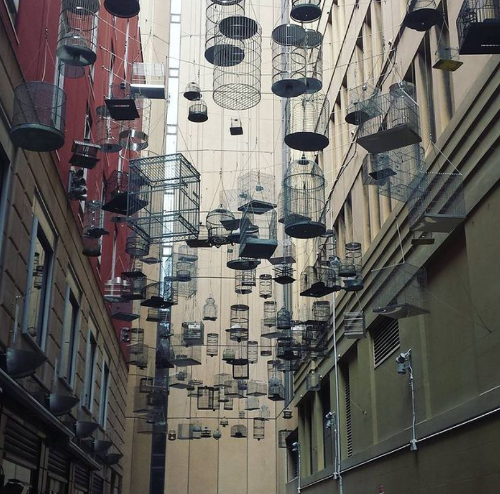
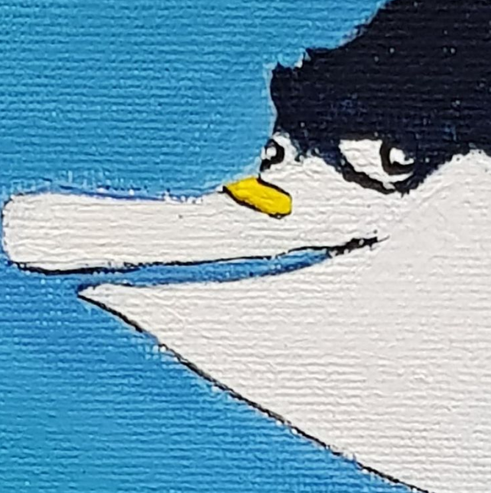
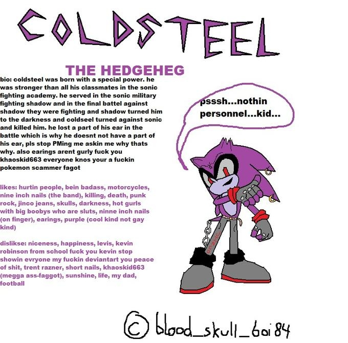
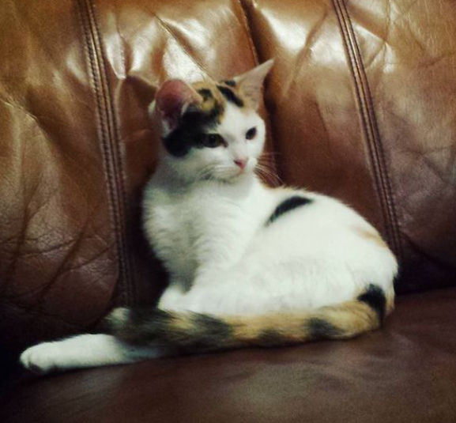

I don't know who's dice these are. Coco Zinva, I guess? They took the photo, at least. Anyway, here's that latin you asked for. Duis labore enim laboris ipsum duis velit sunt laborum officia adipisicing sint. Aliquip anim in sunt ex esse irure laborum sit qui aliqua qui proident irure. Ipsum ex ad voluptate adipisicing ut sunt Lorem elit. Cupidatat quis esse anim exercitation sint commodo deserunt ea minim pariatur ex labore. Tempor eu deserunt dolore nisi excepteur deserunt. Est Lorem dolore in labore commodo eu anim eu pariatur dolore tempor nulla ullamco. Voluptate ex occaecat sit fugiat dolore Lorem occaecat Lorem cupidatat dolor.
Angel Place, Sydney

Duis labore enim laboris ipsum duis velit sunt laborum officia adipisicing sint. Aliquip anim in sunt ex esse irure laborum sit qui aliqua qui proident irure. Ipsum ex ad voluptate adipisicing ut sunt Lorem elit. Cupidatat quis esse anim exercitation sint commodo deserunt ea minim pariatur ex labore. Tempor eu deserunt dolore nisi excepteur deserunt. Est Lorem dolore in labore commodo eu anim eu pariatur dolore tempor nulla ullamco. Voluptate ex occaecat sit fugiat dolore Lorem occaecat Lorem cupidatat dolor.
Nemo, I don't feel so good..

Duis labore enim laboris ipsum duis velit sunt laborum officia adipisicing sint. Aliquip anim in sunt ex esse irure laborum sit qui aliqua qui proident irure. Ipsum ex ad voluptate adipisicing ut sunt Lorem elit. Cupidatat quis esse anim exercitation sint commodo deserunt ea minim pariatur ex labore. Tempor eu deserunt dolore nisi excepteur deserunt. Est Lorem dolore in labore commodo eu anim eu pariatur dolore tempor nulla ullamco. Voluptate ex occaecat sit fugiat dolore Lorem occaecat Lorem cupidatat dolor.
Teleports Behind You

Duis labore enim laboris ipsum duis velit sunt laborum officia adipisicing sint. Aliquip anim in sunt ex esse irure laborum sit qui aliqua qui proident irure. Ipsum ex ad voluptate adipisicing ut sunt Lorem elit. Cupidatat quis esse anim exercitation sint commodo deserunt ea minim pariatur ex labore. Tempor eu deserunt dolore nisi excepteur deserunt. Est Lorem dolore in labore commodo eu anim eu pariatur dolore tempor nulla ullamco. Voluptate ex occaecat sit fugiat dolore Lorem occaecat Lorem cupidatat dolor.
The Fateful Zoo Trip

Once when I was a kid, we went to the zoo for my birthday. My parents were very excited about it, as it would be my first ever trip to the zoo. The trouble began not long after we got there. My father lead us to the monkey exhibit, but we couldn't see any monkeys.
He asked a nearby attendant, who claimed the monkeys were just sleeping. After that, we went to look at the crocodiles, but low and behold, we couldn't see any of those either.
This time, my mother asked about the crocodiles. "They're just sleeping!" the attendant said. After another hour of wandering around finding no animals, my father had had enough, and stormed up to a zookeeper walking nearby.
"DO YOU HAVE ANY ANIMALS IN THIS ZOO!?" he yelled at them.
"Yes sir!" the zookeeper replied.
"Well we haven't seen a single one! It better be something impressive." my father replied, bristling.
The zookeeper took a deep breath. "..Sorry sir, all we have is a dog. It's not even impressive either, it's a shih tzu."